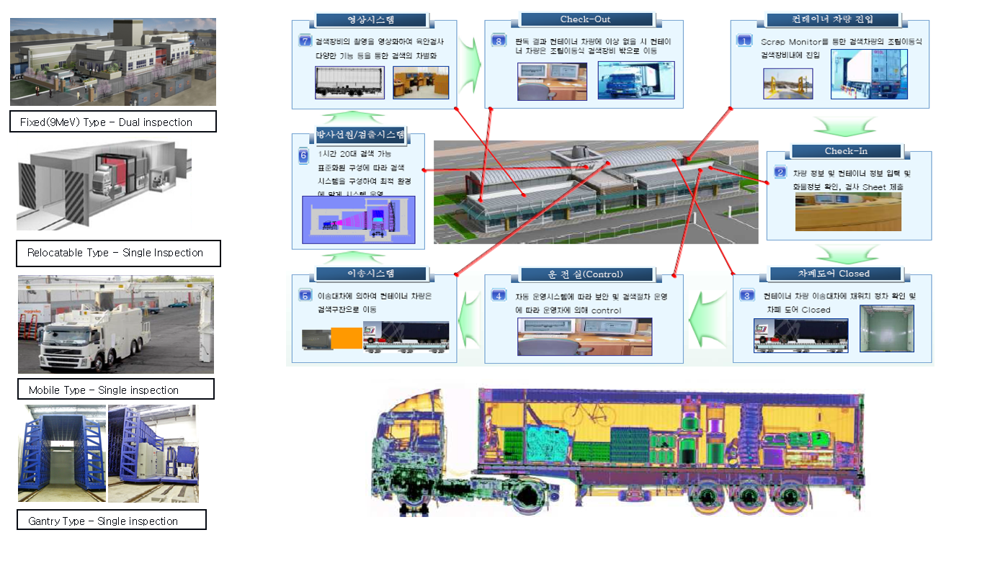

컨테이너 검색 시스템
컨테이너 검색 시스템이란
관세청은 국제적으로 컨테이너를 이용한 수, 출입 물품이 날로 증가하고 수, 출입화물 검사에 소요되는 시간과
비용을 단축하여 수출입업체가 부담하게 되는 시간과 비용을 획기적으로 절감시켜 국가 경쟁력 향상을 도모하기 위한 검사
시스템으로서 항만을 통해 반입/반출되는 컨테이너 화물을 견인 차량에 탑재된 상태에서 X-Ray를 사용하여 내부를 투시함으로써
교묘히 은닉하여 반입되는 농, 수, 축산물, 공산품 및 소비재 등에 혼재 되어있는 밀수를 차단하고 마약, 총기 및 폭발물류와
같은 불법 사회 안전 위해 물품색출 신속하고 효과적으로 적발하기 위한 장비 임.

기술의 세부 분야
컨테이너 검색 시스템을 구축하고 운영해 나가기 위해서는 설계, 구축경험이 풍부한 전문인력과 연구인력,
유지보수인력을 보유하고 있어야 하며 장비 제작사와의 지속적인 기술교류가 활성화 되어야 하고 교육을 통한 유지보수 인력의 충분한
기술 축척이 필수 임.
컨테이너 검색 시스템 소개
항만에서 X-Ray를 이용한 검색 시스템으로 마약, 총기류 등 사회 안전 위해 물품의 반입, 반출과 농수산물의
부정무역을 차단할 수 있는 첨단 솔루션
